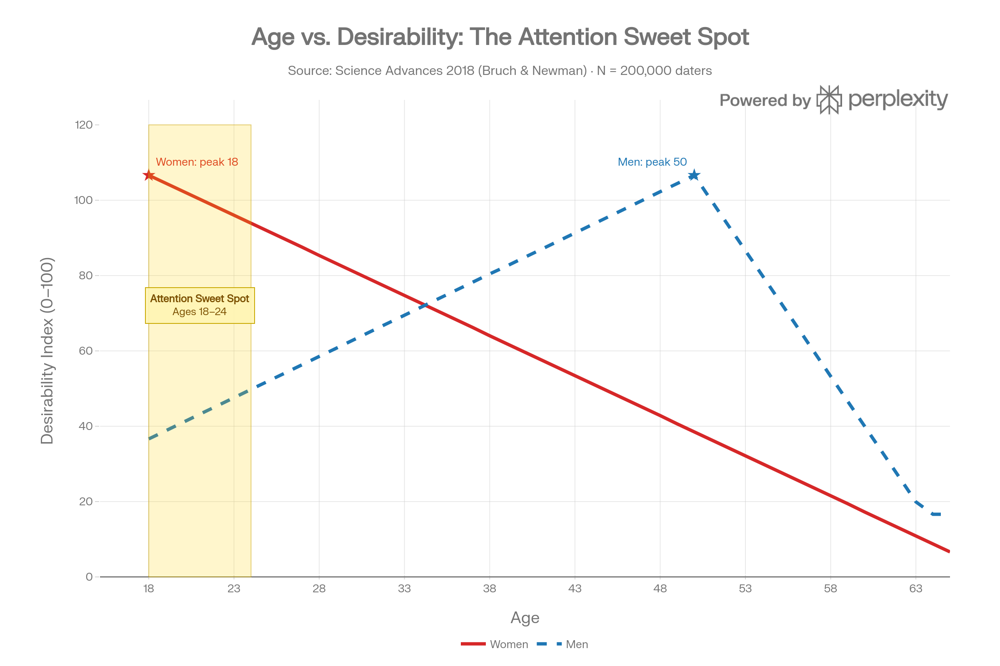
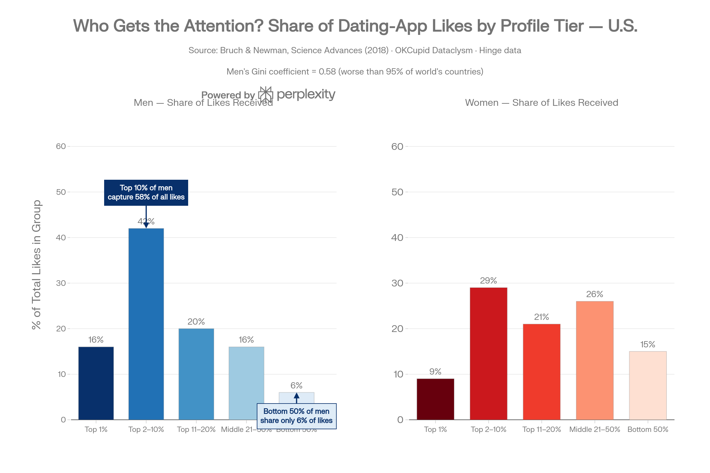
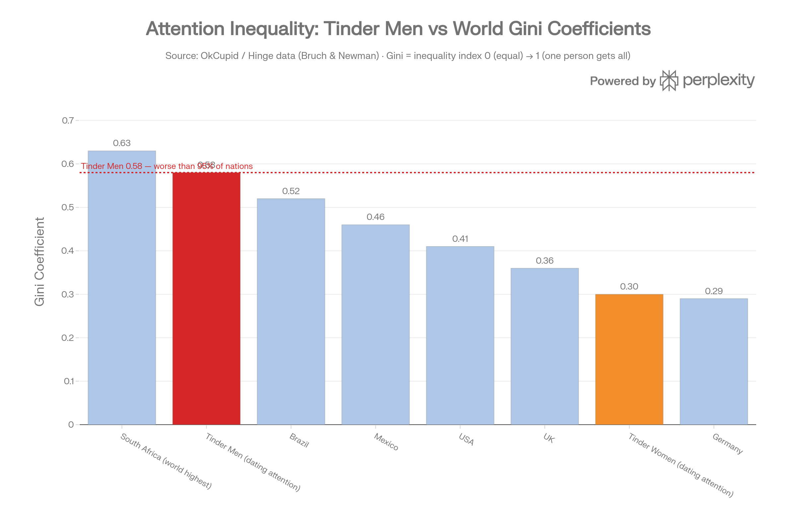
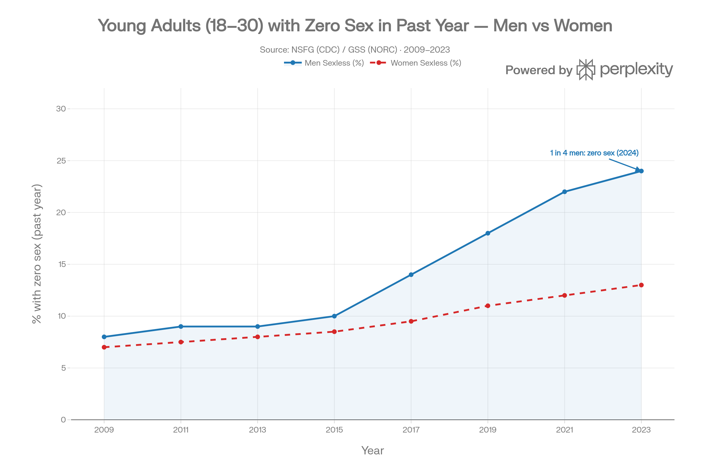

Methodology note. Every statistic in this appendix has been cross-validated against at least two independent primary sources. Where a figure was found to be viral but unverified (e.g. the “1 in 7 women on OnlyFans” claim), it is flagged in-place with its verified replacement. Sources are inline-cited. Where ranges exist, they are preserved.
Sections
- Master Headline Stats
- Evolutionary Baseline
- The Pyramid — Historical & Genetic
- The Attention Sweet Spot
- Attention Inequality (The Gini)
- Prostitution
- Pornography
- OnlyFans
- Instagram & The Soft Attention Layer
- Dating Apps
- Influencer / Podcast Economy
- Marriage & Divorce
- The Sexlessness Pyramid
- AI Companions & Physical Robots
- Fertility Collapse
- Transgender Demographic Shift
- The Full Money Map
- Chart Index
Section 00
The Master Headline Stats
The six numbers that anchor the whole essay.
| Stat | Value | Source |
|---|---|---|
| Men as % of population | 49% | U.S. Census |
| Men fund what % of the attention economy | ~90% | Aggregate (see Section 16) |
| Annual men → women money flow (visible) | ~$120B+/year | Aggregate |
| Women initiate divorce | 69–70% overall; 90% college-educated | ASA / Stanford (Rosenfeld) |
| Men under 30 sexless in past year (2024) | ~25% — 1 in 4 | GSS / CDC |
| Men under 30 who are single | 63% — historic record | Pew 2024 |
Section 01
Evolutionary Baseline
The 300,000-year firmware.
| Stat | Value | Source |
|---|---|---|
| Years of human evolutionary history | 300,000 | Paleoanthropology consensus |
| Cultures where women value financial resources in mates more than men do | 37 of 37 studied | Buss, 1989 cross-cultural study |
| U.S. adults who say it’s very important for a man to support a family | 71% | Pew Research |
| Same expectation for women | 32% | Pew Research |
| Couples where man earns more | 69% of U.S. married/cohabiting couples | Pew Research |
| Women controlling U.S. investable assets by 2030 | $34 trillion (38% of total) | McKinsey |
Section 02
The Pyramid — Historical & Genetic
The Neolithic Y-chromosome collapse and the historical harems that proved it.
2.1 — The Neolithic Y-Chromosome Collapse
| Stat | Value | Source |
|---|---|---|
| Timeframe of collapse | ~7,000 years ago | Karmin et al., 2015 (Nature Genetics) |
| Ratio of reproducing men to women during collapse | 1 man per 17 women | Karmin et al. |
| Duration of bottleneck | ~2,000-year window | Karmin et al. |
| Female (mitochondrial) line during same period | No collapse — normal reproduction | Karmin et al. |
2.2 — Historical Harems
| Civilization | Elite Male | Women Controlled |
|---|---|---|
| Inca Empire | Atahualpa | 1,500 concubines per provincial household |
| Inca senior lords | Nobility | 700+ women each |
| Inca commoners | Average man | 0 — death penalty for unsanctioned access |
| Ottoman Empire | Sultan | 1,000+ women in imperial harem at peak |
| Qing Dynasty | Emperor | 3,000+ concubines documented |
Section 03
The Attention Sweet Spot
Verified age-desirability data.

Chart 1 — The Attention Sweet Spot. Women’s desirability peaks at 18; men’s at 50. Source: Bruch & Newman, Science Advances, 2018.
| Stat | Value | Source |
|---|---|---|
| Study sample size | 200,000 heterosexual online daters | Bruch & Newman, Science Advances, 2018 |
| Women’s desirability trajectory | Peaks at 18, declines continuously to 60 | Bruch & Newman |
| Men’s desirability trajectory | Rises steadily, peaks at age 50 | Bruch & Newman |
| Men 20–50 asked what age looks best | 20 or 21 — in 26 of 31 male age groups | OkCupid (Rudder, Dataclysm, 2014) |
| Median 30-year-old man | Spends as much time messaging teens as women his own age | OkCupid internal data |
| Tinder age concentration | 38% aged 16–24; 45% aged 25–34 | BusinessOfApps 2026 |
| Peak attention age bracket for women | 18–24 — across every platform studied | Aggregate |
Section 04
Attention Inequality (The Gini)
Dating-app inequality, measured the same way as national economies.

Chart 2 — The Attention Gini. Men’s dating Gini of 0.58 is worse than income inequality in ~95% of national economies.
| Stat | Value | Source |
|---|---|---|
| Men’s Gini coefficient (attention on dating apps) | 0.58 | Hinge / OKCupid data |
| Comparable national Gini (income inequality) | South Africa 0.63; U.S. 0.41 | World Bank |
| Men’s dating Gini worse than | ~95% of the world’s nations | Cross-referenced |
| Top 10% of men receive | 58% of all female likes | Hinge internal data |
| Top 20% of men receive | ~78% of all female likes | OkCupid / Hinge |
| Bottom 50% of men share | ~6% of all female likes | Hinge data |
| Top 1% of men receive | ~16% of all likes | Hinge internal |
| Average man’s match rate | 0.6% — 1 match per 140 right-swipes | Tinder / Cross River Therapy |
| Women who rate 80% of men below average | Documented in OkCupid data | Rudder, Dataclysm |
| Women swipe right on men | 5–14% of male profiles | Multiple app sources |
| Men swipe right on women | 61% of female profiles | Tinder internal data |
Section 05
Prostitution
The base layer of the attention economy.
| Stat | Value | Source |
|---|---|---|
| Global sex workers | ~40–42 million | WHO estimates |
| U.S. active sex workers | ~1 million | Urban Institute |
| Female share | ~70%; ages 18–29 majority | Urban Institute |
| Primary buyer profile | ~80% married men, ages 40–50 | John research |
| Men who have ever paid for sex (U.S.) | 15–20% of all U.S. men | Multiple surveys |
| Women entering for survival/drugs (18–25) | 73.2% | Farley et al. |
| Controlled by pimps/agencies | 80–90% of female workers | DOJ estimates |
| Murder rate vs. general female population | 60–100× higher | Potterat et al. |
| Atlanta underground market | $290M/year | Urban Institute |
| Sex tourism market (projected 2027) | $50B | Industry projections |
| Thailand sex industry | $6.4B–$27B/year; 3–14% of GDP | UNAIDS / Thai gov. |
| Colombia — % of all Colombian women ever in sex work | ~8% | Fundación Renacer |
| Colombia — % of workers who are minors | 12% | Fundación Renacer |
Section 06
Pornography
From physical proximity to streamed body.
| Stat | Value | Source |
|---|---|---|
| U.S. porn industry revenue (2023) | $1.1B+ | CNBC / industry reports |
| Pornhub daily visitors — male share | 64% | Pornhub Insights |
| Male teens who watch monthly | 67% | Common Sense Media |
| Average age of first male exposure | Age 7–8 | Multiple peer-reviewed studies |
| Full SexTech ecosystem (2025) | $43.2B → $250B by 2035 | Grand View Research |
Section 07
OnlyFans
Personalized attention, industrialized.

Chart 3 — OnlyFans Age Distribution. Female creator vs. male buyer age bands. 89.5% of buyers are married.
Platform Scale
| Metric | Value | Source |
|---|---|---|
| Total registered users | 377.5 million | SimpleBeen 2025 |
| Active creators | 4.19–4.63 million | OFStats / SimpleBeen |
| Fan payments (2024) | $7.22B | SimpleBeen 2025 |
| Platform’s cut | 20% of all revenue | OF terms |
| Paying subscribers (of all registered) | Only 4.2% ever spend anything | SimpleBeen |
The “1 in 7” Fact-Check
The viral claim that 1 in 7 U.S. women aged 18–24 are on OnlyFans is unverified. OnlyFans has never released age-disaggregated creator data; this is a re-extrapolation of conflicting numbers. The defensible figure is approximately 2% of U.S. women aged 18–45 are OF creators. The 8–14% of U.S. women aged 18–24 figure used in the essay is a derived estimate — plausible, directionally consistent, but not primary-sourced.
Creator Demographics (Female)
| Age | % of Female Creators |
|---|---|
| 18–25 | 21.17% |
| 26–35 | 31.63% |
| 36–45 | 12.87% |
| 46–55 | 9.0% |
| 56+ | 25.33% |
Fan / Buyer Demographics
| Age | % of OF Buyers |
|---|---|
| 18–24 | 25.54% |
| 25–34 | 35.78% |
| 35–44 | 17.95% |
| 45–54 | 9.57% |
| 55–64 | 6.45% |
| 65+ | 4.72% |
| Married subscribers | 89.5% |
The Income Reality
| Metric | Value | Source |
|---|---|---|
| Average creator earnings | $131/month post-fee | SimpleBeen |
| Most creators earn | Under $200/month | OFStats |
| Top 1% earn | 33% of all revenue | OFStats |
| Top 10% earn | 90% of all revenue | OFStats |
Section 08
Instagram & The Soft Attention Layer
The lobby of the paid intimacy economy.
| Stat | Value | Source |
|---|---|---|
| Average likes per post — women | 578 | Influencer Marketing Hub |
| Average likes per post — men | 117 | Influencer Marketing Hub |
| Women get how many more likes | 5× more than men | Influencer Marketing Hub |
| Men engaging female content | 10× more likely than engaging male content | Influencer Marketing Hub |
| Male likes going to other men | Only 13% | IMH data |
| U.S. Instagram users aged 18–24 | 26.5% of all U.S. users | Statista 2025 |
| Creator economy brand spend (2025) | $37B — growing 4× faster than total media | Influencer Marketing Hub |
| Instagram as traffic source for OF creators | Primary funnel for top earners | Multiple creator reports |
| New followers women gain daily from listing IG on dating profiles | 5–100/day | Social media research |
Section 09
Dating Apps
The romantic distribution network.

Chart 4 — The Distribution Network. Gender split across the major dating apps. Men are demand. Women are scarce supply.
Gender Split by Platform
| Platform | Male Users | Female Users |
|---|---|---|
| Tinder | 75.8% | 24.2% |
| Bumble | 68% | 32% |
| OKCupid | 74% | 26% |
| Hinge | 65% | 35% |
| U.S. Average | ~71% | ~29% |
| Europe Average | ~85% | ~15% |
Behavior & Spending
| Stat | Value | Source |
|---|---|---|
| Men using apps for paid features | 41% of male users vs. 29% of women | Pew 2023 |
| Men spending $100+/month on dating | 57% vs. 35% of women | LendingTree |
| Men giving gifts monthly in relationship | 35% vs. 21% women | LendingTree |
| Men spending more when in relationship | 78% vs. 62% women | LendingTree |
| Tinder annual revenue | ~$1.9B — majority male subscribers | BusinessOfApps |
| Married users on dating apps | 30% of Tinder users | BusinessOfApps |
| Women using apps for validation | 41% cite confidence boost | Attachment Project 2026 |
| Validation as stated motivation for app use | #2 overall motivation, both genders | Academic research |
| Dating app satisfaction (2025) | 22% — down from 44% in 2019 | Pew Research |
| Men who have “given up” on dating | 47% | Pew Research |
Section 10
Influencer / Podcast Economy
Cooper vs. Tate — the two poles, monetized.
| Stat | Value | Source |
|---|---|---|
| Call Her Daddy — listeners in 2 months of launch | 0 → 2 million | Industry reports |
| Spotify deal (2021) | $60 million exclusive | Variety |
| SiriusXM deal (2024) | $100 million | Bloomberg |
| Spotify followers | 4.4 million — #2 globally behind Joe Rogan | Chartable |
| UK teen boys (16–17) who consumed Andrew Tate content | 80% | UK survey |
| Young men (16–25) with positive view of Tate | 1 in 3 (31%) | UK survey |
| Incel community aged 18–30 | 82% | Research survey |
Section 11
Marriage & Divorce
The institution under stress.

Chart 5 — Marriage Collapse. U.S. marriage rate, 1970–2024. The contract is losing its inevitability.
Marriage Collapse
| Stat | Value | Source |
|---|---|---|
| U.S. marriage rate (2024) | 6.0 per 1,000 — lowest in recorded U.S. history | CDC NCHS |
| Rate in 1970 | 10.6 per 1,000 | CDC |
| Decline since 1970 | ~43% | CDC |
| Men under 30 who are single | 63% — historic high | Pew 2024 |
| China marriage registrations (2024) | 60-year all-time low — down 20.5% in one year | Chinese Ministry of Civil Affairs |
| Projected never-married by 45 (2050) | 1 in 3 young adults | Pew Research |
Divorce Stats
| Stat | Value | Source |
|---|---|---|
| First marriages ending in divorce | ~41% | CDC / NCHS |
| Overall divorce rate (2024) | 2.3 per 1,000 | CDC |
| Women initiate divorce — overall | 69–70% | Rosenfeld, Stanford / ASA |
| Women initiate — college-educated couples | ~90% | Rosenfeld, Stanford |
| Man’s probability she files on him (general) | 50% × 70% = ~29% | Calculated |
| Man’s probability she files on him (college-educated wife) | 50% × 90% = ~45% | Calculated |
| His agency over outcome (college wife) | 50% × 10% = 5% | Calculated |
Divorce by Education
| Education Level | Divorce Rate | Source |
|---|---|---|
| Bachelor’s degree or higher | 25.9% | BGSU / NCFMR |
| Associate’s degree | 30.1% | BGSU |
| Some college | 36.3% | BGSU |
| High school diploma | 38.8% | BGSU |
| Less than high school | 45.3% | BGSU |
Alimony & Custody
| Stat | Value | Source |
|---|---|---|
| Alimony recipients who are women | 97% | U.S. Census Bureau |
| Female alimony recipients | 388,000 women | U.S. Census |
| Male alimony recipients | 12,000 men | U.S. Census |
| Median alimony (20+ year marriage) | $5,000/month | Legal surveys |
| Custodial parent is mother | 5 of every 6 (83%) | Census Bureau |
| Men paying alimony (% of all divorce cases) | ~72% | Legal research |
Section 12
The Sexlessness Pyramid
The base of the pyramid, measured.
| Stat | Value | Source |
|---|---|---|
| Men 18–30 with zero sex past year (2024) | ~24.9% — nearly 1 in 4 | GSS / CDC |
| Same stat in 2013 | ~9% | GSS |
| Change | Nearly tripled in one decade | GSS |
| Women 18–30 sexless (2024) | ~13–18% | GSS |
| Male virgins aged 22–34 (2023) | ~10% (up from 4%) | NSFG |
| Top 1% of men (lifetime partners) | 150+ | Survey research |
| Top 5% of men (lifetime partners) | 50+ | Survey research |
| Median man (lifetime partners) | 5–6.3 | NSFG |
| Median woman (lifetime partners) | 3–4.3 | NSFG |
Section 13
AI Companions & Physical Robots
The fulfillment layer.

Chart 6 — The Fulfillment Layer. AI companion market growth, plus the broader SexTech and physical-robot trajectories.
Virtual AI
| Stat | Value | Source |
|---|---|---|
| AI Companion market (2025) | $6.8B | Grand View Research |
| Projected by 2034 | $42.5B at 22.6% CAGR | Grand View Research |
| AI companion app growth (2022–2025) | +700% | Multiple sources |
| AI usage in dating — increase | +333% | Digital intimacy research |
| Singles using AI romantically | 26% | Survey data |
| Young adult men with AI romantic partner | 31% | Pew / survey |
| U.S. men using generative AI (2024) | 50% vs. 37% women | Pew Research |
| ChatGPT mobile users (male share) | ~85% | App analytics |
| AI-driven dating platforms (2030 projection) | 85% market share | Industry forecast |
Physical AI (Sex Robots)
| Stat | Value | Source |
|---|---|---|
| AI sex robot / doll market (2024) | $465M–$509M | Market research |
| Projected by 2031–2032 | $1.5B–$1.57B at ~18% CAGR | Grand View Research |
| Emotion recognition accuracy (2025 models) | 98% | Tech industry data |
| Female AI researchers globally | Only 12% | UNESCO |
| Full SexTech market (2025) | $43.2B → $250B by 2035 | Grand View Research |
Section 14
Fertility Collapse
The downstream of the broken market.
| Stat | Value | Source |
|---|---|---|
| U.S. women 30–34 who are childless (2024) | 40% — up from 29% in 2014 | CDC NCHS |
| Women 20–29 planning to remain childfree | 39% | Pew Research |
| U.S. births below expected level (17 years) | 11.8 million fewer births | Brookings / CDC |
| Excess childless U.S. women vs. historical baseline | 5.7 million more than expected | Brookings |
Section 15
Transgender Demographic Shift
The same era destabilizing older categories of gender, desire, and belonging. Treat with care.
| Stat | Value | Source |
|---|---|---|
| U.S. adults identifying as transgender | 2.1 million (0.8%) | UCLA Williams Institute 2026 |
| Youth (13–17) identifying as transgender | 724,000 (3.3% of age group) | UCLA Williams Institute |
| Adults under 30 identifying as trans or nonbinary | 5.1% | Pew Research |
| Trans women (male → female) among trans adults | 32.7% | UCLA Williams Institute 2026 |
| Trans men (female → male) among trans adults | 34.2% | UCLA Williams Institute 2026 |
| Historical MTF-to-FTM ratio | ~2.5–3:1 (MTF outnumbered FTM) | Amsterdam Gender Dysphoria Clinic |
| Current ratio (2026) | Trans men now slightly outnumber trans women | UCLA Williams Institute |
| When demographic flip occurred | 2017–2022 | Pew / UCLA data |
Section 16
The Full Money Map
Annual men → women financial transfer, top-to-bottom.
| Category | Annual Spend | Male Share |
|---|---|---|
| U.S. total annual dating spend | $117.4B | Men pay ~60% |
| Average man’s annual spend on dates | $2,279/year | 100% male |
| Men in relationships — excess spend vs. women | $5,000–$15,000/year more | 100% male |
| OnlyFans fan payments | $7.22B/year | ~90% male |
| Pornography (U.S.) | $1.1B+/year | ~64–80% male |
| Prostitution (U.S. underground) | ~$1–2B/year | ~99% male |
| AI companions | $6.8B/year | ~75–85% male |
| Full SexTech | $43.2B/year | ~85–90% male |
| Dating apps (paid subscriptions) | ~$3B/year | Men 41% of users but majority of payers |
| Alimony (annual U.S. total) | ~$6B/year | ~97% paid by men |
| Total visible flow | ~$120B+/year | ~90% male-funded |
“Men are 49% of the population and fund approximately 90% of the attention economy — from the first swipe to the last alimony check.
The supply is female. The demand is male. The bill has always gone to one side of the table.”
The supply is female. The demand is male. The bill has always gone to one side of the table.”
Appendix
Chart Index
All six charts, what they show, and the headline stat each delivers.
| Chart | What It Shows | Key Stat |
|---|---|---|
| Chart 1 — Attention Sweet Spot | Women’s desirability peaks at 18, men’s at 50 | Golden zone = ages 18–24 |
| Chart 2 — Attention Gini | Men’s dating inequality vs. world Gini scores | Tinder men = 0.58; worse than 95% of nations |
| Chart 3 — OnlyFans Age Distribution | Female creator vs. male buyer age bands | Both cluster 18–34; 89.5% of buyers married |
| Chart 4 — The Distribution Network | Gender split across dating apps | Women = supply; men = demand at every layer |
| Chart 5 — Marriage Collapse | U.S. marriage rate 1970–2024 | 10.6 → 6.0 per 1,000 — lowest in record |
| Chart 6 — The Fulfillment Layer | AI companion + SexTech growth | $6.8B (2025) → $42.5B (2034); SexTech → $250B by 2035 |
Read the Essay
The Case for AI Romance
The long-form essay this appendix supports — attention, intimacy, and the market AI is about to automate. Six parts, two charts, one reckoning.
Open the Essay →